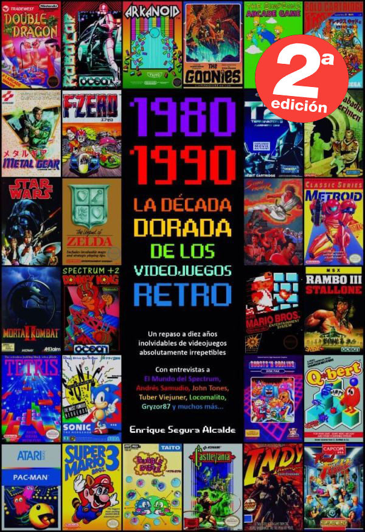
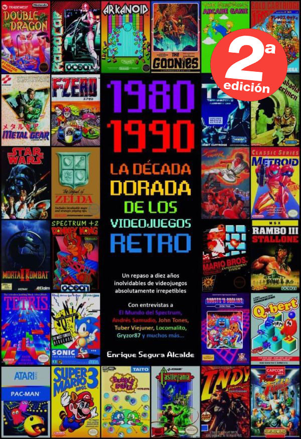

ConTexto
ORIGEN DE LOS JUEGOS RETRO
Los primeros tiempos
Los primeros videojuegos datan de principios de la década del setenta. El Pong, de 1972, fue el primer videojuego que alcanzó gran popularidad.
Fue creado por los fundadores de la empresa Atari, Alan Alcorn y Nolan Bushnell, que provenían del área de ingeniería. Por entonces, la tecnología
imponía numerosas limitaciones a la creatividad de los fabricantes de juegos. No obstante, para fines de la década del setenta, muchos videojuegos
alcanzaron una popularidad mundial sin precedentes. Los más conocidos y exitosos fueron Space Invaders, Asteroids, Lunar Lander, Galaxian y Breakout,
entre otros. La mayoría de los juegos de esa época eran en blanco y negro, y, además, relativamente cortos; sin embargo, poseían uno de los componentes más
importantes que puede tener un juego: eran divertidos.
Con la década del ochenta, llegaron la masividad y los avances tecnológicos. El color se volvió indispensable y comenzó «la era de oro» de los videojuegos.
Proliferaron los arcades, grandes salones con cientos de videojuegos. También aparecieron las primeras consolas, como Atari 2600 o ColecoVision. Entonces, y
por muchos años más, los videojuegos que se encontraban en los arcades tenían supremacía tecnológica. Además, algunas de las más importantes empresas de
videojuegos que hoy existen comenzaron en esta época, como Activision o Nintendo. Y todos los conocidos personajes de Nintendo, como Mario y Donkey Kong,
salieron a la luz durante esa época, con juegos que fueron grandes éxitos.

La masividad de los juegos dio un giro aún mayor con la llegada de las computadoras hogareñas. A mediados de la década del ochenta, esta industria
experimentó un crecimiento sin precedentes. Computadoras como la Apple 2, la Commodore 64 o la Spectrum estaban en la mayoría de los hogares de clase media
del mundo. Particularmente en la Argentina, las más usadas fueron la Commodore 64 y varios modelos de Sinclair, como la Spectrum ZX81 o la Timex Sinclair 2068.
El píxel y el mundo digital
El elemento gráfico básico e irreductible de todo videojuego es el píxel. Un píxel es la menor unidad homogénea en color que constituye una imagen digital,
como una fotografía, un fotograma de un video o un gráfico. Los miles de diminutos píxeles que componen una imagen individual se proyectan en una pantalla en
forma de puntos iluminados que, desde lejos, se ven como una imagen continua.
Cuando en el mundo real se mezclan dos o más pinturas sobre una paleta, se obtienen infinitos matices de colores. Esa combinación, esa generación de infinitos
valores intermedios, es la propiedad, por excelencia, de lo analógico.
En el mundo digital, esa perfección que genera la infinidad de posibilidades es finita y acotada. Si bien el incremento tecnológico permite obtener mayor
cantidad de matices, estas posibilidades siempre serán finitas.
Por supuesto, esto se aplica en diversos campos del mundo de los videojuegos, desde los controles con los cuales los jugadores manejan su personaje hasta el nivel de realismo que pueden procesar. Una regla es básica: a mayor capacidad tecnológica, mayor realismo. Pero esto no significa necesariamente mayor diversión, aunque sí más posibilidades de creación. Un juego puede resultar sorprendentemente realista, ¡pero muy aburrido!
Esta misma limitación de lo digital es la causa del surgimiento de una nueva estética basada en el píxel. Con el correr de los años, se fue conformando un concepto gráfico que invoca todos estos elementos que fueron parte de la historia cultural de una generación: la estética del píxel.
Los años 80 comenzaron con un fuerte crecimiento en el sector del videojuego alentado por la popularidad de los salones de máquinas recreativas y de las primeras videoconsolas aparecidas durante la década de los 70.
Durante estos años destacan sistemas como Oddyssey 2 (Phillips), Intellivision (Mattel), Colecovision (Coleco), Atari 5200, Commodore 64, Turbografx (NEC). Por otro lado en las máquinas recreativas triunfaron juegos como el famoso Pacman (Namco), Battle Zone (Atari), Pole Position (Namco), Tron (Midway) o Zaxxon (Sega).
El negocio asociado a esta nueva industria alcanzó grandes cosas en estos primeros años de los 80, pero sin embargo, en 1983 comenzó la llamada crisis del videojuego, afectando principalmente a Estados Unidos y Canadá, y que no llegaría a su fin hasta 1985.


Japón apostó por el mundo de las consolas con el éxito de la Famicom (llamada en occidente como Nintendo Entertainment System), lanzada por Nintendo en 1983 mientras en Europa se decantaba por los microordenadores como el Commodore 64 o el Spectrum.
A la salida de su particular crisis los norteamericanos continuaron la senda abierta por los japoneses y adoptaron la NES como principal sistema de videojuegos. A lo largo de la década fueron apareciendo nuevos sistemas domésticos como la Master System (Sega), el Amiga (Commodore) y el 7800 (Atari) con juegos hoy en día considerados clásicos como el Tetris.
A finales de los 80 comenzaron a aparecer las consolas de 16 bits como la Mega Drive de Sega y los microordenadores fueron lentamente sustituidos por las computadoras personales basadas en arquitecturas de IBM.


En 1985 apareció Super Mario Bros, que supuso un punto de inflexión en el desarrollo de los juegos electrónicos, ya que la mayoría de los juegos anteriores sólo contenían unas pocas pantallas que se repetían en un bucle y el objetivo simplemente era hacer una alta puntuación. El juego desarrollado por Nintendo supuso un estallido de creatividad. Por primera vez teníamos un objetivo y un final en un videojuego. En los años posteriores otras compañías emularon su estilo de juego.
 

Otra rama de los videojuegos que creció con fuerza fue la de los videojuegos portátiles. Estos comenzaron a principios de los 70 con los primeros juegos completamente electrónicos lanzados por Mattel, los cuales difícilmente podían considerarse como videojuegos, y fueron creciendo en popularidad gracias a conversiones de recreativas como las realizadas por Coleco o adictivos microjuegos como las Game & Watch de Nintendo. La evolución definitiva de las portátiles como plataformas de videojuego llegó en 1989 con el lanzamiento de la Game Boy (Nintendo).
 Desde sus comienzos hasta la actualidad, la industria de los videojuegos ha crecido enormemente. Hoy en día, la producción para un videojuego puede superar o igualar en personal y presupuesto a producciones cinematográficas. No obstante, las nuevas plataformas tecnológicas también permiten volver a los inicios y hacer videojuegos pequeños y divertidos, realizados por pocas personas o inclusive una sola.
Por otra parte, su potencial es enorme: los videojuegos se usan con objetivos muy variados, no solo el entretenimiento.
Desde sus comienzos hasta la actualidad, la industria de los videojuegos ha crecido enormemente. Hoy en día, la producción para un videojuego puede superar o igualar en personal y presupuesto a producciones cinematográficas. No obstante, las nuevas plataformas tecnológicas también permiten volver a los inicios y hacer videojuegos pequeños y divertidos, realizados por pocas personas o inclusive una sola.
Por otra parte, su potencial es enorme: los videojuegos se usan con objetivos muy variados, no solo el entretenimiento.